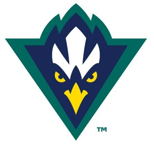

Zachary Inserra Software Developer
Profile
About Me
I am a junior software developer with a passion for learning and expanding my knowledge and skill set.
I have strong programming fundamentals, an affinity for organization, and am detail-oriented.
I love team based work and learning from others, especially those with many years of experience.
Details
Name: Zachary Inserra
Age: 23
Location: Charlotte, NC
Education
University of North Carolina Wilmington
August 2014 - December 2018

I went into college as a Chemistry Major and a Mathematics Minor. In my junior year, I realized my passion for technology, so, I decided to switch to Computer Science. I learned the basics, like Object Oriented Programming and Data
Structures, in Python and Java.
Over the next few years I moved on to more complicated learning, including artificial intelligence, database concepts, algorithm design and implementation, and video-game design. I also expanded my skill set by learning Javascript, CSS,
HTML, and SQL through web development and source control through GitHub.
I graduated in December of 2018 with a Bachelor's of Science in Computer Science, a Minor in Mathematics, and a Concetration in Chemistry.
Career Development
ChristianSteven Software
Junior Software Developer
Charlotte, NC
June 2019 - Present

This job has provided me with some of the most valuable experience I have ever had. I was able to take my knowledge of Object Oriented Programming and quickly learn the ins-and-outs of using Visual Basic and C# on the .NET Framework.
I got familiar with Visual Studio for programming and Sourcetree (Atlassian's Git GUI) and GitHub Desktop for version control.
Main duties include designing and implementing new features (VB/C#, SQL) in enterprise level reporting software for SSRS, Power BI, and Crystal Reports.
We use Kanban as our development process, however, we would do work in sprints leading up to new version releases, much like in Agile. We used Jira to visulaize our workflow and keep track the work the needs to be done, work that is in
progress, and work that is done.
Here I was introduced to Model-View-ViewModel design structure. I was in charge of designing and building a tool to help in development, technical support, and quality assurance.
Certifications
Microsoft Certified Solutions Associate:
SQL 2016 Business Intelligence Development
Achieved March 2020
Exam 767: Implementing a Data Warehouse
Design, implement, and maintain a data warehouse.
Extract, transform, and load data.
Build data quality solutions.
Exam 768: Developing SQL Data Models
Design a multidimensional business intelligence semantic model.
Design a tabular business intelligence semantic model.
Develop queries using Multidimensional Expressions (MDX) and Data Analysis Expressions (DAX).
Configure and maintain SQL Server Analysis Services.
Skills
Languages
Visual Basic/C#
SQL
Javascript
Node.js
Express.js
CSS
HTML
Python
Java
Software/Tools
Visual Studio
SQL Server Management Studio
Git
Jira
Power BI
SQL Server Reporting Services
Crystal Reports
SQL Server Integration Services
SQL Server Analysis Services
Concepts
Object Oriented Programming
MVVM
Kanban
Agile